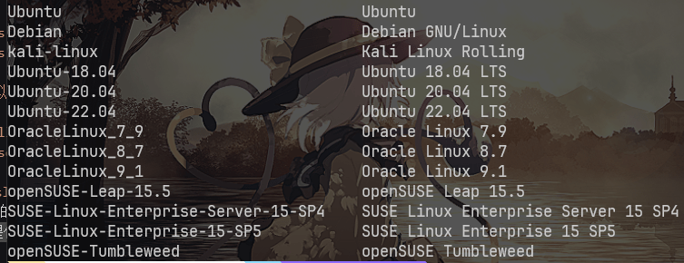
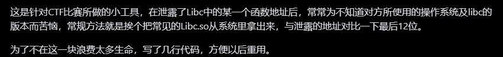

WSL2 Environment¶
基础环境¶
虚拟机配置 Linux 环境
可以选择现在比较流行的Linux发行版
例如 Ubuntu,Arch 等等,下面我使用kali~我用的环境~的发行版
虚拟机环境也很多种 例如 VirtualBox,Docker
下面主要用WSL 2~我用的环境~为主
WSL 2(安装麻烦,但是用起来简单)¶
Windows 10 以上且有系统要求且对访问微软商店(Microsoft Store)有需求
- Windows10 版本要求 Windows 10 2020 年 5 月(2004) 版, Windows 10 2019 年 5 月(1903) 版，或者 Windows 10 2019 年 11 月(1909) 版
- Windows11 无要求
前置¶
安装Windows Terminal
相信我 不会有人喜欢顶着蓝窗和黑窗看的 投入 Windows Terminal 的怀抱吧
以管理员权限启动PowerShell¶
附:如果你也觉得天天觉得管理权限烦看看这个文章 可以按 Win+X
-
启用 WSL
-
启用虚拟机平台(Hyper-V)
-
设置 wsl 2 为默认值
安装喜欢的 Linux 发行版¶
WSL 2 提供以下发行版(运行wsl -l -o就能看到)

这里选择 Kali 包括下文全部在 kali 环境上安装wsl install --install kali-linux
如果网络不好可以试试加上--web-download参数
安装好配置密码就行了
apt 等包管理器的配置¶
如果你能够珂学上网那么可以试试使用以下.bashrc/.zshrc参数
# network proxy
host_ip=$(cat /etc/resolv.conf |grep "nameserver" |cut -f 2 -d " ")
export ALL_PROXY="http://$host_ip:proxy_port"
export HTTP_PROXY="http://$host_ip:proxy_port"
export HTTPS_PROXY="http://$host_ip:proxy_port"
export http_proxy="http://$host_ip:proxy_port"
export https_proxy="http://$host_ip:proxy_port"
proxy_port记得改为你代理工具的开放的port
如果不行请给 apt 等包管理器换为国内源
参见:Ubuntu 22.04 换国内源
最后输入
wsl 基础环境基本配置完成
想要进入 wsl 只需要win+r wsl 或者进入终端在终端输入 wsl 运行
安装kali-linux-large 和 kali-win-kex¶
kali-linux-large 是 kali 完整包 很大 不建议在晚上断网时下载
kali-kex 是 GUI 连接
附.
- 存储压缩
wsl --shutdown
diskpart
select vdisk file="%UserProfile%\AppData\Local\Packages\KaliLinux.54290C8133FEE_ey8k8hqnwqnmg\LocalState\ext4.vhdx"
attach vdisk readonly
compact vdisk
detach vdisk
- 设置内存大小
修改 windows 系统
%UserProfile%目录下.wslconfig
- 备份&还原
备份:
wsl --export -d kali-linux [备份存储路径]
还原:
wsl --unregister kali-linux
wsl --import kali-linux [还原位置] [备份文件路径]
一些 tools¶
可以通过百度等搜索引擎来查找他们的安装教程
anaconda¶
建议装上防止需要切换 python 版本或者有包冲突时用
pwndbg¶
pwn 手必备 装了附带checksec和ROPgadget
msfvenom¶
shellcode 转码 kali 自带 有兴趣可以学下 msf 全家桶
AE64¶
shellcode 转码
LibcSearcher¶

觉得不好用可以 clone 下来自己更新libc-databaseglibc-all-in-one¶
libc 不兼容时使用 为了找一个兼容能跑起来的 libc
参考链接: 如何在 Windows 10 上安装 WSL 2 搭建 WSL2 下的 Kali 环境
ps:再给一份我自己的template: